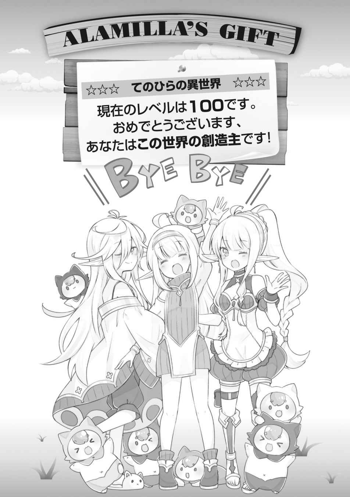

エピローグ
エネルたちの力で、あの星からはすべての生命を「てのひらの異世界」に移すことに成功していた。元々、神殿の力で移住のことは世界的に伝わっていたから、移住者サイドは大きな混乱にならなかったようだ。
そして、移住者を受け入れる側である開拓村も意外とスムーズだったのだが、これはエネルたちが手回しをしてくれてあったのが大きい。事前に街のトップへ通達を出したり、食料や住居や衣類を大量に用意しておいてくれたらしい。
移住者たちはファーレー教徒が多い。別々の教徒が同じ場所にいれば、必ず軋轢が発生するものだが、今のところは、意外とファーレー教と既存宗教であるカイ教との折り合いを付けて暮らしているようだ。
島の最後の姿を目に焼き付けてから、人類の最後の一人として俺が「てのひらの異世界」に移動して、約半月後。俺たちはエネルの屋敷のテレビの前に集まっていた。
画面には俺たちの国だった島の風景が映し出されている。
石造りの堅牢な王城。城下町を下った先には、何百という船が停泊可能な港。
街に綺麗な水を運ぶ、千年は使う予定だった水道橋。そして、天を衝く巨大灯台。
今は、誰にも使われることなく、ただ潮風を受け佇んでいる。
そして、預言通りに滅びの時は来た。
テレビに映し出されるのは、空を切り裂いて飛来した何十何百もの巨大隕石が、島を破壊する場面。
それは、言葉にならない映像だった。その、なにもかもを一瞬で押し潰す圧倒的な力に、テレビの前の誰しもが言葉を失った。
すぐに粉塵が押し寄せ、テレビ画面では地表は全く見えなくなった。
あるいは、島は跡形もなく消滅した可能性すらあった。
いずれにせよ、預言通り。あの世界はもう人の住めるところではなくなったのだ。
そう、嫌でも理解できてしまった。
島がダメになっても、開拓村の中での生活は続く。
むしろ、ここからが心理的な完全移住であるといえた。
二十四時間滞在が可能になったとはいえ、開拓村の中で暮らしたことがあるわけじゃなかったから、多少の不安もあったのだが、暮らしてみても開拓村は快適だった。
住む場所は、シエルが家族全員が住んでも問題ないサイズにまで屋敷を増築してくれた。衣類はコロモが用意してくれるし、食べ物はエネルが材料を出してくれるわけで、逆に問題を探すほうが大変といった具合だ。
もちろん、せっかく柵の外に出られるようになったのだし、外の世界にも興味があったが……俺には小さい子どももいるし、身重の嫁たちもいる。日帰りで少し外の世界を見に行く程度で、基本的にはずっとエネルの屋敷の周辺で過ごしている。
テレビを使って星の状況を確認したかったというのもある。隕石群の直撃を受けて、徹底的に破壊されたのだし、そうそう変化などないとわかってはいたのだが、それでも一縷の望みに懸けたかったのかもしれない。
ＶＲゴーグルを使って、島の外の世界も見て回ってみたが、どこも同じようなありさまで、完全になにもかもが破壊され、それこそ荒野しか残っていないような状況だ。
粉塵は少しずつ晴れ始めているが、それでも日の光が差すことはなく、まさに終末が訪れた世界といった様相である。万が一、何の打つ手もなくあの場所に人間が暮らしたままだったのなら、阿鼻叫喚の地獄と化していただろう。
わかっていたことだが開拓村を人類の第二の故郷にする以外の選択肢はなさそうだった。
俺は自室で、魔鋼で覆われた鈍く輝くカプセルのボディを撫でた。
神殿が守護聖人アーサーに使おうと画策していた千年前の魔法文明の遺産──冷凍睡眠装置である。俺がこれの準備をしていることを知っているのは、俺以外ではホリーだけだ。
この世界を永遠に──なんて、そんな大それたことを言うつもりはない。
だが、俺が死ねばその瞬間この世界は閉ざされる。移住者たちが俺の死に巻き込まれて消滅するのか、それとも俺の死と共に外に弾き出されるのか、それはわからない。
だが、そのいずれだったとしても、俺には彼らを招いた責任がある。
四〇年後か五〇年後か。冷凍に耐えられるよう、体力があるうちにこれを使うつもりだ。
──いつか、あの星が人間が住めるくらい回復する、その時まで。
「あんよが上手！ あんよが上手！」
俺はリビングでジークとセラフィが歩いて移動するのを見て感激していた。
一番最初に生まれた、俺たち家族の長男であるジークムントと、長女のセラフィ。一歳と少しになるが、甘やかされて育ったからか、二人とも歩けるようになったのはこちらに来てからだった。
それでも、小さな小さな赤ちゃんだった二人が、自分の力で立ち上がりヨチヨチと歩く姿は可愛らしく、滅びの前に立ち向かって良かったと、今更ながらに感じるのだった。
「よーしよしよし！ ジークもセラフィも歩くのが上手だなぁ」
「ふふ、すっかりカイ様も父親ですわね」
「そりゃ、こう見えて六児の父だからね。まあ、ちょっと未だに現実感ないとこあるけど」
肉体年齢は十八歳だが、前世の分も含めると精神的には父親だとしても不思議ではない年齢ではある。いやまあ、十八歳で父親ってのは、こっちの世界的には全然普通の年齢なわけではあるのだが。
「カイ様は、かなり子育てに協力的なほうだと思いますわよ？ 私など、幼少期に父親と接した記憶自体がないくらいですもの」
「王族と比べてもな。普通だろ俺なんて。任せっきりな部分も多いし」
「そうでしょうか」
自分の子どもなのだから、面倒くらい見る。まあ、俺の場合、子どもが六人もいるからってのを言い訳にするわけじゃないが、さほどやれていないぐらいだ。
「うちのパパはたくさん私と遊んでくれたよー？」
カエデが反証を出す。彼女はもうだいぶお腹がかなり大きくなってきていて、もう来月には産まれるだろう。
「エドワードさんは超が付く子煩悩だからな。貴族としては特殊なんじゃないか？」
そのエドワードはというと、カエデが妊娠したと知ると飛び上がって喜び、生まれてくる孫が楽しみで仕方がないらしい。カエデにも言わずにシエルにベビーベッドを発注したり、名前の候補を考えていたりと、ちょっと暴走している節がある。
今も、胎教に良いと聞いて、音楽家を探しに出ているくらいだ。
「さあさあ、オヤツが焼けたぞー！ 今日は久しぶりにチーズケーキにしてみた」
話をしていたら、エプロン姿のサラが、ホールケーキを運んできた。
サラは元々料理担当だったが、こっちに来てからは無限の素材を相手に試行錯誤を重ね、もはや完全に料理人の域だ。毎日、なにを作るかウキウキと献立を考えており、すっかり料理にハマりきっている。
「チーズケーキ！ 私、好きなんですよ！」
リーベルが翼をバタつかせて跳ねるように喜ぶ。
「リーベルさん、そんなに動くとお腹の子によくありませんよ？」
「あっ、そうだった。ありがとう、ユーリさん」
注意されて、翼をたたむリーベルだが、サラが切り分けるケーキを凝視している。
まあ、確かにサラが作るケーキは美味しい。個人的にはモンブランが一番好きだ。
リーベルは嫁たちの中で一番妊娠が遅かった。おそらく異種族同士だからだろう。
「お茶を淹れて来ましたよ～」
大きいお盆に紅茶を載せて、ルキアとローザとコロモがリビングに入ってくる。
これで広いリビングに、家族がほとんど全員揃った。こちらに来てから、いつのまにか家族でティータイムを設けるのが日課となっていたのだ。
「美味しい！ 本当にサラさんは料理上手ですよね。私も教わろうかしら？」
フィオーナが舌鼓を打ち、元高位貴族の娘らしからぬ発言をした。
彼女は、すぐ近くの別邸で母親であるディー侯爵と執事やメイドに囲まれて暮らしている。とはいえ、ティータイムには必ず遊びに来るし、ディー侯爵も貴族でなくなって暇なようで、いっしょに来ることも多い。
「あっ、いいんじゃないですか？ 私も教わってますし」
返事をしたルキアの最近のマイブームは、料理──それも俺の口伝から「俺の前世の料理」を作ることだ。その一環としてサラから料理を教わっている。
「そうですね。……でも、私は厳しいですよ？」
ふわりと笑うサラ。ルキアによると、口では厳しいと言うけど実際は甘々らしい。
フィオーナは、貴族としての責任から解放されて気楽になったと、少し前に言っていた。自由にしている兄──ファウゼルがうらやましかったと。
まあ、ファウゼルは本当に自由だ。この世界に移住してから、冒険に出ていって未だに帰ってこないほどである。
「……それにしても、こんなに穏やかな時間を過ごせるなんて夢のようだわね」
隅の席で本を読みながらお茶を啜っていたマリエラが、ぽつりと言う。
「世界は滅んだのに、すべての人間を『能力の世界』に平らげて救うなんて……。私たちの旦那様はスケールが大きすぎて目眩がするくらいよ」
「兄さんがいなかったら、私たちも……この子たちもみんな死んでたんだと思うと、今の生活って夢みたいですよね」
ルキアも悪い意味で言っているわけではないだろうが、夢といえば夢みたいなものだ。俺の能力の中の世界なんて、地面の先になにがあるかもわからない、不確かなものなのである。本当は緊急避難先として使うべきもので、ここにずっと住み着くのは本来危険だ。
俺がなにかの拍子に死んでしまえば、なにもかも消滅してしまうのだから。
「前にアーサーさんが話してくれたんですけど、兄さんと同じアラミラの祝福者のこと……昔は『アラミラの使徒』って呼んだんですって」
突然、そんな話を始めるルキア。
何千年もの昔、どこから来たのかわからないアラミラの恩寵を受けた男が、当時大発生し世界を危機に陥れたモンスターをすべて退治して世界を救った。
男は大変に感謝され、神の化身と崇められ『アラミラの子』と呼ばれるようになり、その男が死んでからも、アラミラの恩寵を受けた者を畏敬を込めて『アラミラの使徒』と呼ぶことになったのだそうだ。
「それでね、アーサーさんは兄さんのこと、きっと神が遣わしてくれた『アラミラの子』なんだって言っていた。まあ、兄さんは私のために神様が遣わしてくれたんですけどね！」
ルキアのためかどうかはともかく、俺が出自不明なのは確かだ。実際、転生者であるのは確かだし、神様が遣わした──というのは、あながち間違いでもないかもしれない。
「マスター！ マスター・カイ！ 朗報朗報！」
そんな雑談をしながらお茶を楽しんでいると、バタバタとホリーがやってきた。
後ろにはアビスとセレスが追ってきている。アビスは今日は大事な実験があるからと、外に出ていたが、それと関係があるのだろうか。
「マスタ！ やったよ、ホリーがやってくれた。私、赤ちゃんできるって！」
「えっ!? どういうことだ？」
「そのまんまの意味ですよ！ マスター・カイの鈍感！ 実は私、プロトとセレスとずっとレプリカントが妊娠できるようになるための研究してたんですよ！」
ホリーは珍しく興奮しているようだった。そして、まさかそんな研究をしていたとは。
「マスタ、私、やっぱりマスタとの子ども欲しくって。それで、ホリーに相談していたの」
「そうだったのか。アビスが子どもを……！ やった……、やったな」
アビスはレプリカントであり、子どもができない。
口にこそしないが、他の嫁たちに子どもができていくことを、やはり羨ましく思っていたらしいのは、言葉の節々から感じ取ることができていた。
俺はアビスに子どもができようが、そうでなかろうが愛していたけれど、彼女自身がそれで救われるのならば、こんなに嬉しいことはない。
「ジークやセラフィみたいな可愛い赤ちゃん産みたい。私が母親になれるなんて……不思議な気持ち」
そのジークとセラフィは歩けるようになったのが嬉しいのか、ティータイムの間も危なっかしい足取りで、あちこちを歩き回っていた。
俺たちは微笑ましい気持ちでそれを見ている。
「ばーぶ、ばー。あー！」
意味をなさない赤ちゃん語のジークが、テレビのリモコンを掴んだ。
その拍子に、テレビの電源が入り、画面が明るくなる。
「だー、だうー！ きゃっきゃ」「あうー！」
その映像を見てジークとセラフィが手を叩いて喜ぶ。
「ん～？ そんな面白いものが映ってるのかな～？ …………え？」
テレビの内容は、ずっと粉塵と荒野と日の差さぬ大地だったのに、しかし、明らかに粉塵が薄くなってきている。そして、日の光が時々フッと差すではないか。
その速度は、リアルタイムというより、まるでビデオを早送りしているかのようだ。
コマ送りのように空が晴れ、大地に緑が芽吹いていく。
「エ、エネル？ これは……いったい？」
ソファで寛いでいたエネルに問いかける。
するとエネルは、悪戯っぽく「やっと気付いたね」と微笑んだ。
「カーイ。開拓村では時間の流れが違うって話をしたでしょう？ あれってね、私が時間を操作してるんだよ。素材が足りない状態では早めすぎないように。原始的な時代では、意図的に速度を上げたりしてね」
確かに記憶にある。
そういう操作を行うから、私たちは永遠の寿命を持つエルフなんだよ──とかなんとか。
「つまり……？」
「逆もできるってこと。今、この世界は外の世界の一万分の一のスピードで時間が流れるように調整してる。つまり、現実世界では一万倍の速度で時間が過ぎ去っていってる」
テレビに目を向けると、星がみるみる間に再生していく姿を克明に映しだしていた。
隕石によって破壊された大地に緑が戻っていく。
どこかで種子が生きていたのか、花が緑が──そして、生命が復活していく。
エネルが、あの究極魔法で「全部は持って行けないよ」と言ったのは、これを見越してのことだったのだろうか。
テレビの中の世界は、隕石が降り注ぎすべてが破壊されたのが嘘だったかのように、俺が知っているままの美しい世界へと戻りつつあった。
「もう大丈夫だよ、カイ」
半年後。エネルがついに太鼓判を押した。
もうすっかり破壊の爪痕は消え去り、世界は再生していた。
俺は久しぶりに能力を解除し、すっかり再生された大地に降り立った。
島は少し形を変えてしまったようだけれど、それでも愛しい俺の島だった。
家族の移住を解除して、みなで久しぶりの潮風を味わう。
俺はこの島に来たばかりのころを思い出していた。
あの頃、能力も未発達で体だって貧相だった。仲間だってほとんどいなかった。
その時のことを思えば、今はなんて恵まれていることか！
もう、滅びは過ぎ去ったのだ。これからは創造していくだけだ。生み出していくだけだ。
俺は、創造神アラミラの使徒なのだから。
──さあ、ここに俺たちの国を作ろう！
『てのひら開拓村で異世界建国記』 おわり
